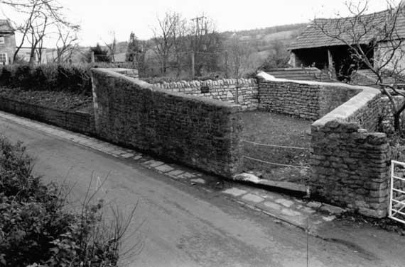

The old animal pound, Northend, Batheaston
In the care of The Batheaston Society
Location: Nat. Grid Ref. ST 782 686
Type of building:
Animal pound. Part of a complex of former barns (now converted for residential
purposes) stables & pig sty formerly within the curtilage of Eagle Farmhouse
(now a separate private residence)
Listing:
Grade ll
Plan:
Open four-sided enclosure fronting the road.
Summary of the probable main building
history:
Reconstructions and repairs from the 18th to the late 20th centuries.

The pound from the south following repair, 1973
Construction:
Built upon ground sloping north to south and of roughly coursed rubble stone.
The wall height is variable, generally slightly less than 2 m., although reaches
a height of about 2.50m. in the north-west corner. Repaired and reconstructed
many times, most recently 1973 when most of the collapsed north wall was re-erected.
This new wall is at a lower height than the extant remains of the north wall but
is level with the standing east wall. This modern work is capped with serrated
stones, the remaining walls being cement capped. The wall lengths are variable,
from about 5.47m. to about 8.28m. (internal measurements) to form a rough square.
The thickness of walls is also variable, from 0 .75m.in the north-east corner
to 0.45m. at the entrance. The entrance is in the south west corner, 1.95m. wide
and presently guarded by two removable metal rods (part of the 1973 work). Placed
inside the enclosure there is a blacksmiths iron wagon wheel iron- tyre template
(1.61m. in diameter), again, placed there in 1973.
Date & development:
The evidence of repairs and reconstructions makes it difficult to place a date
on the structure. The listing schedule dates it as 18th Century. Mrs. Dobbie believes
the pound was probably moved to its present position from the common in 1814 (p.40).
Certainly, in 1814 the parish authorities agreed to pay the owner of Codrington's
(now Eagle Farmhouse) rent for the pound as it lay on his land (see the 1814-1838
dispute documents) and the occupier of Codrington's was its keeper. However, these
documents suggest that the pound is upon its original site. The documents also
indicate that there were two pounds for Batheaston - one within the Tything of
Easton and Catharines (sic), the other, the present subject, in the Tything of
Easton and Amoril, the keeper of which was appointed by the Court Leet for the
Liberty of Hampton and Claverton. The pound being owned by the Lord of the Manor
or Liberty for the use of himself and the inhabitants of the Tything. In course
of time and with the dismemberment of the Manor or Liberty, the pound became the
common pound for the use of the inhabitants of Batheaston generally.
References and bibliography:
- Pounds or Pinfolds, and Lockups B.M. Willmott Dobbie University of Bath Press
1979
- Documents relating to a dispute re. the Pound 1814-1838 Somerset Record Office
- Batheaston Society Archives
Survey Drawings
| Ground Plan |
Images from the Archives
| Entrance to the pound, about 1966 before restoration | Fines levied for impounded animals, 1719 |